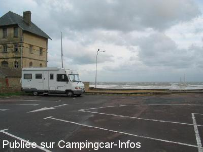
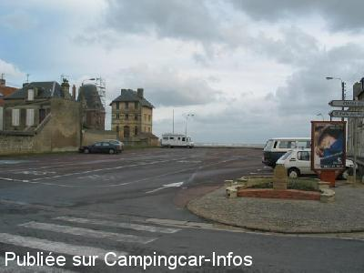

APN = Parking toléré jour/nuit de :
LION SUR MER
(N° 321)
Accès/adresse :
Rue du Général Galiéni
Parking de la Mairie
14780 LION SUR MER
Parking de la Mairie
14780 LION SUR MER
Latitude : (Nord) 49.3016° Décimaux ou 49° 18′ 5′′
Longitude : (Ouest) -0.313° Décimaux ou 0° 18′ 46′′
Tarif : Gratuit
Services :

A 100m des commerces
Autres informations :
Stationnement interdit de 10 à 20 h
Tél Office du Tourisme +33(0)231 968 795
http://www.tourisme.fr/office-de-tourisme/lion-sur-mer.htm

Le 05/01/2004 par nomade 59

Le 05/01/2004 par nomade 59
de
Seb & Nath
le 31/07/2015 :
Une nuit passée à deux pas de la mer, à deux pas des commerces et restaurants. Certes, il s'agit d'un parking où le stationnement des camping cars est autorisé de 20h à 10h, mais il est assez calme la nuit (une fois que les gens ont quitté les resto, plus grand passage sur ce parking). Et en pleine saison, nous étions les seuls. En résumé, un endroit assez tranquille et pratique, mais pas fait pour les lève-tard, ni pour les adeptes des coins natures.
Une nuit passée à deux pas de la mer, à deux pas des commerces et restaurants. Certes, il s'agit d'un parking où le stationnement des camping cars est autorisé de 20h à 10h, mais il est assez calme la nuit (une fois que les gens ont quitté les resto, plus grand passage sur ce parking). Et en pleine saison, nous étions les seuls. En résumé, un endroit assez tranquille et pratique, mais pas fait pour les lève-tard, ni pour les adeptes des coins natures.
de
Jean claude
le 18/04/2015 :
le 18 avril 2015, nous avons dormi sur ce parking face a la mer et au calme, à recommander. Toujours autorisé de 20h à 10h. Merci à la commune.
le 18 avril 2015, nous avons dormi sur ce parking face a la mer et au calme, à recommander. Toujours autorisé de 20h à 10h. Merci à la commune.
de
Greg
le 08/03/2009 :
Attention, interdiction de stationner entre 10h et 20h ! Juste possible donc de passer la nuit et ce par arrêté municipal, pancarte à l'entrée du parking.
Attention, interdiction de stationner entre 10h et 20h ! Juste possible donc de passer la nuit et ce par arrêté municipal, pancarte à l'entrée du parking.
de
le 14/02/2008 :
Je confirme qu'il est pratiquement impossible de trouver de l'eau dans les aires de services de la région (en hiver ?) et dans plusieurs aires il est également impossible de vidanger la cassette des toilettes. Dur d'être propre!
Je confirme qu'il est pratiquement impossible de trouver de l'eau dans les aires de services de la région (en hiver ?) et dans plusieurs aires il est également impossible de vidanger la cassette des toilettes. Dur d'être propre!
de
denis
le 16/04/2006 :
Grand parking face à la mer. Promenades, bien situé, très sympa. Quelques noctambules de passage.
Grand parking face à la mer. Promenades, bien situé, très sympa. Quelques noctambules de passage.